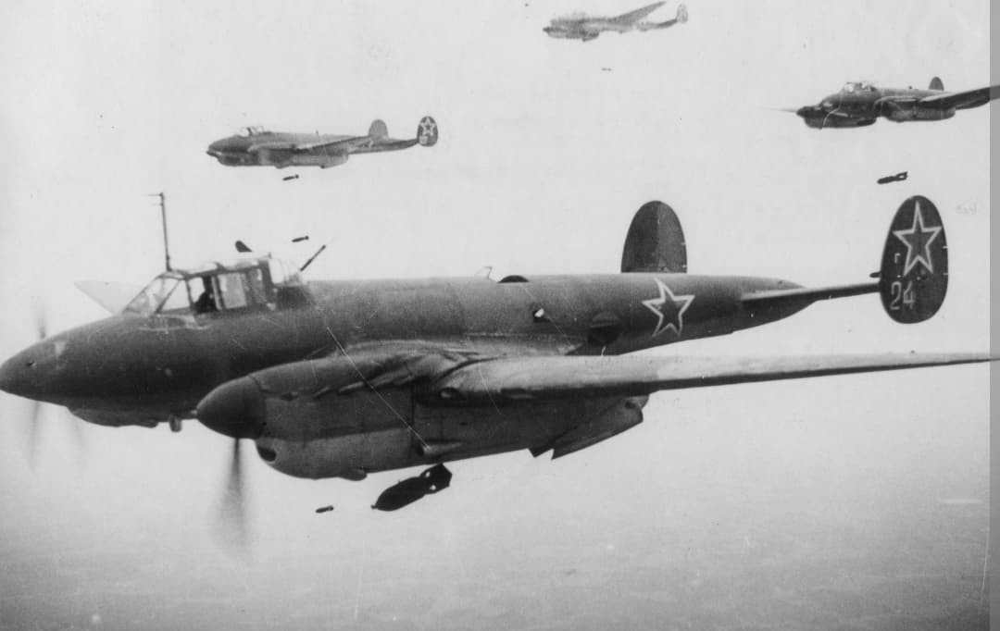
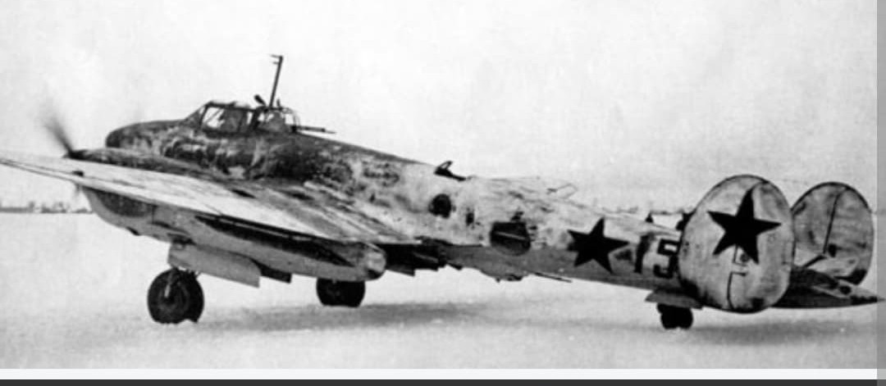
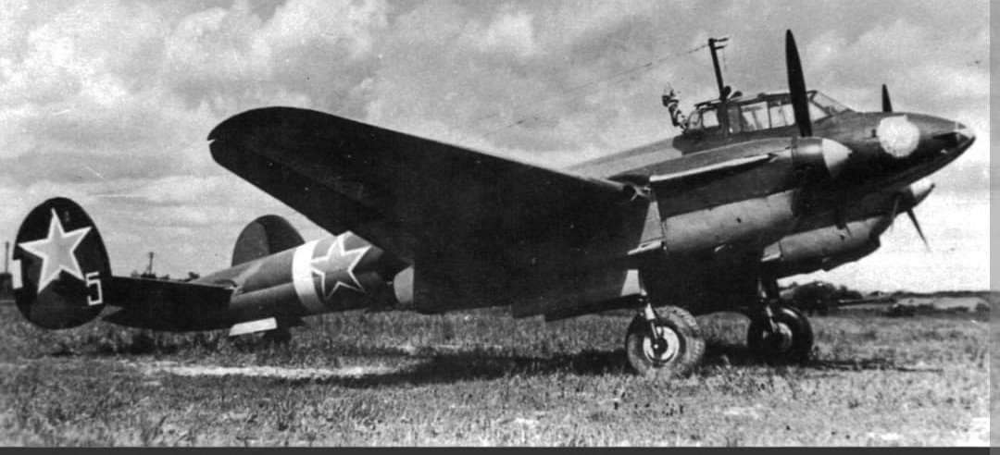

Surnommé « Peshka » : le bombardier en piqué bimoteur rapide et moderne des forces aériennes soviétiques

Le Petlyakov Pe-2 (affectionneusement surnommé Peshka par ses équipages) est un bombardier bimoteur rapide et bombardier en piqué conçu par le bureau d'études dirigé par Vladimir Petlyakov. Mis en service au début de l'année 1941, il constitue l'un des bombardiers les plus modernes et efficaces de la Seconde Guerre mondiale, produit à plus de 11 400 exemplaires.
Conçu à l'origine comme un chasseur de haute altitude (projet VI-100), le Pe-2 fut rapidement réorienté vers le rôle de bombardier tactique. Grâce à sa vitesse élevée qui lui permettait souvent de semer les chasseurs ennemis, ses freins de piqué électriques et sa précision redoutable, il est devenu la cheville ouvrière du bombardement tactique de la VVS.
Spécifications de référence du Petlyakov Pe-2 (série standard de 1942–1943) :

Le Pe-2 se distinguait nettement des autres appareils soviétiques par son niveau de sophistication technologique pour l'époque :

Utilisé sur l'ensemble du front de l'Est, de la Finlande à la mer Noire, le Pe-2 a exécuté des missions variées : attaque de nœuds ferroviaires, destruction de ponts stratégiques, appui tactique direct lors des grandes offensives et reconnaissance photographique à grande vitesse.
Sa grande vitesse de pointe lui permettait souvent de distancer la chasse adverse et d'échapper à la Flak. Il fut également piloté par le célèbre 125e Régiment Féminin de Bombardier en Piqué (dirigé par Marina Raskova puis Evguenia Timofeïeva), démontrant l'efficacité redoutable de ces équipages en combat.
Page du Musée HOP WW2 – Petlyakov Pe-2